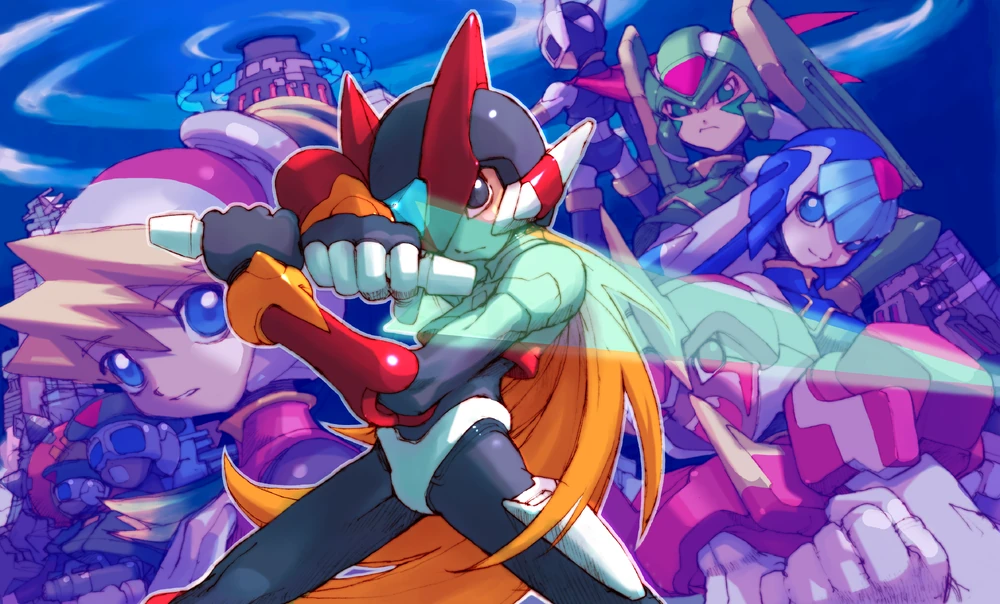

Synopsis
Mega Man Zero is a hack and slash platform game series in Capcom's Mega Man video game franchise. It was developed by Inti Creates, with Co-Producer Keiji Inafune and Director Yoshinori Kawano. The series consists of four games that were first released on the Game Boy Advance. The story plays 100 years after (22XX) the Mega Man X storyline and follows the re-awakened Zero, who is fighting in a war between humans and Reploids, self-aware, human-like robots who are oppressed and hunted down by mankind due to a worldwide energy shortage crisis. Together with the human scientist Ciel, Zero helps the Reploid resistance survive and fights against other Reploids sent by mankind to destroy them. However, this is only the setup for the story and events change drastically throughout the series.
